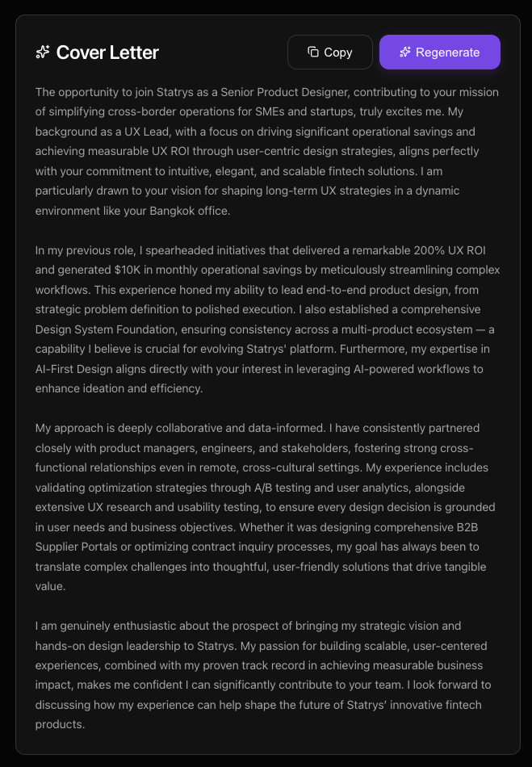
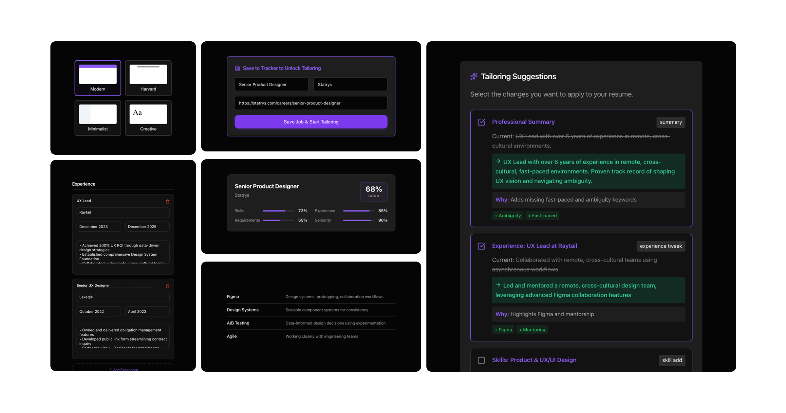

01 -- The Nightly Ritual
Six weeks in. The spreadsheet had 47 rows. Two were highlighted green.
Every evening, Sarah opened a new Google Doc, pasted the job description, and manually highlighted keywords she needed to match. Then she switched to ChatGPT for generic rewrites that never sounded like her. Resume v47 was still fundamentally the same document as v1. Every application started from scratch. No memory of what worked. No pattern from the 46 that didn't land.
"Every evening I opened a new Google Doc, pasted the job description, and manually highlighted keywords I needed to match."
-- Sarah, UX Designer (Composite persona from 12 designer interviews)
She wasn't failing. She was invisible. Her resume said the right things in the wrong language for each specific role -- and she had no systematic way to see the gap.
What if the problem isn't the resume itself -- but the process of tailoring it?
02 -- What 12 Designers Said
Semi-structured interviews. 3 to 8 years experience.
I spoke with 12 product designers between January and February 2026 about their job application process. The conversations revealed three consistent patterns that shaped every downstream design decision.
- 10 out of 12 reused the same resume across roles. No structured starting point meant no structured variation.
- 8 out of 12 stopped using AI rewrite tools. The outputs didn't sound like them -- fabricated claims, corporate tone, lost personality.
- 11 out of 12 couldn't see the gap between what they wrote and what the JD actually wanted. They were guessing.
Three design decisions emerged directly from these findings. First, base resume first -- give designers a structured starting point they own. Second, gaps before praise -- show problems before reassurance. Third, no full AI rewrite -- preserve voice and authenticity at every step.
The problem isn't the resume. It's the process. So what does a better process look like?
03 -- The Core Bet
Treat the resume as a living argument. Every JD is a new brief.
If AI can analyze a job description against the designer's actual resume data -- surface gaps, rank them by impact, and generate rewrite-ready suggestions -- the designer gets intelligence instead of guesswork. Build the engine once. Run it for every application.
| Approach | Verdict | Why |
|---|
| Chrome Extension | Rejected | Keyword matching without resume context. Too shallow. |
| Figma Plugin | Rejected | Wrong context. Resume editing happens in a doc editor. |
| Simple Checklist | Rejected | Still requires the designer to do all cognitive work. |
| Integrated Pipeline | Chosen | Base resume + JD input + AI gap analysis + ranked suggestions + cover letter. Full context, one environment. |
What does the actual pipeline look like from the designer's perspective?
04 -- How It Was Built
Vibe code first. Design system second. Test throughout.
The build process followed a deliberate sequence designed to validate logic before committing to pixels. Start with a working proof of concept through conversational coding with Claude, then sync design variables from the codebase as Figma tokens so design and code stay in lockstep.
- Vibe Code with Claude -- Working proof of concept through conversational coding, validating pipeline logic before any pixel work.
- Sync Variables as Tokens -- Design variables from the codebase synced as Figma tokens. Design and code stay aligned.
- Create Components -- Component library in Figma backed by synced tokens.
- Prototype, Test & Iterate -- Figma Make prototypes. Five moderated usability tests. Weekly reviews with three beta testers. Iterations shared with eight beta users.
Now let me walk you through the six stages of the pipeline itself.
05 -- The Pipeline
Six stages. One source of truth.

The Engine -- Base Resume splits editing and preview into a single source of truth.
Stage 1: Base Resume. A split-panel editor with live PDF preview. This is the source of truth. Every application starts here -- not from a blank Google Doc.
Stage 2: Paste the JD. Copy from any job board. The system normalizes messy copy-paste into structured data.
Stage 3: AI Analyzes. Claude reads the JD against the resume. Extracts skills, seniority signals, and culture language.
Stage 4: Gap Analysis. Match score, missing keywords, and role intelligence presented in plain language.
Stage 5: Suggestions. Specific rewrites ordered by impact. Apply, skip, or modify. The designer always has editorial control.
Stage 6: Cover Letter. JD plus resume data produces a three-paragraph draft in under five minutes.

Cover letter generated from JD + resume context.
Let me show you the full pipeline in action.
06 -- Full Demo
The complete pipeline from paste to export.

UI Components -- built from synced design tokens.
These components encode specific design decisions. Here are the four that mattered most.
07 -- Key Design Decisions
Four deliberate choices and one mistake.
Base Resume First
The analyzer needs real data to measure the gap. Everything downstream -- gap analysis, suggestions, cover letter -- depends on a structured starting point the designer owns.
Gaps Before Praise
Show problems first. This is inverted from instinct -- most tools lead with encouragement. But surfacing gaps first drives action over reassurance.
No Full AI Rewrite
AI fabricates claims and loses the designer's voice. Suggestions plus editorial control preserve authorship. The designer decides what to apply, skip, or modify.
AI Badge Gone on Export
AI-assisted markers are a working-session indicator only. The final exported resume is always clean -- no trace of the tool in the deliverable.
What We Got Wrong
V1 showed all suggestions simultaneously. Users felt overwhelmed. We added impact ranking so the highest-leverage changes surface first. Separately, 3 out of 5 participants said gap analysis felt discouraging. We softened the language from "missing" to "opportunity to strengthen."
What does the before-and-after look like in practice?
08 -- Before & After
From forty minutes of guesswork to fifteen minutes of intelligence.
| Metric | Before | With Pipeline |
|---|
| Resume tailoring | ~40 min per role | ~15 min |
| Keyword gap analysis | Manual / guesswork | Structured in seconds |
| Cover letter | ~20 min per role | <5 min |
| Tools required | Google Doc + ChatGPT + manual | One pipeline |
Back to Sarah. Three weeks after she started using the pipeline.
09 -- Sarah's Story, Week Three
One bullet rewritten. The callback came.
She ran the pipeline for a Stripe role. Match score: 74. Top gap identified: design systems at scale. One bullet rewritten to address that specific gap. She applied. Five tailored applications in two weeks produced two interview callbacks -- compared to two callbacks from her previous 47 generic applications.
The pipeline didn't guarantee interviews. It removed the bottleneck that made tailoring feel impossible. Each application became a run of the engine -- not a blank page.
10 -- Planned Metrics
Signals to track post-launch for real-value validation.
Free to Pro Upgrade Driver
Is the JD Analyzer the feature that pushes free users to upgrade? Tracking conversion correlation between analyzer usage and subscription tier change.
24h Activation to Retention
Do users who run a JD analysis within 24 hours of signup retain longer? Measuring the activation-to-retention curve.
Organic Reach via Shares
Every exported resume is a potential touchpoint. Tracking the share-to-view ratio as an organic acquisition signal.
What did building this pipeline teach me about AI-assisted design tools?
11 -- What This Taught Me
Four lessons from building the resume pipeline.
Intelligence Over Automation
Gap analysis plus editorial control delivers 80% of time savings with 100% of authenticity. The designer stays in the loop.
The Engine Model
Build the base resume once. Every application is a run of that engine -- not a blank page. Structure compounds.
Context Changes Everything
The same resume data produces different tailoring for each role. Intelligence lives in the comparison between what you have and what the role needs.
Trust as UX
A designer who knows AI cannot silently change their resume will engage with suggestions more openly. Agency builds trust. Transparency builds adoption.